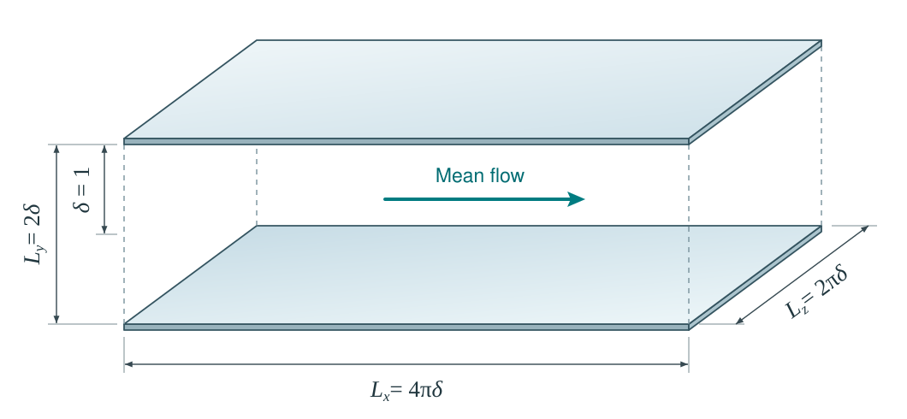
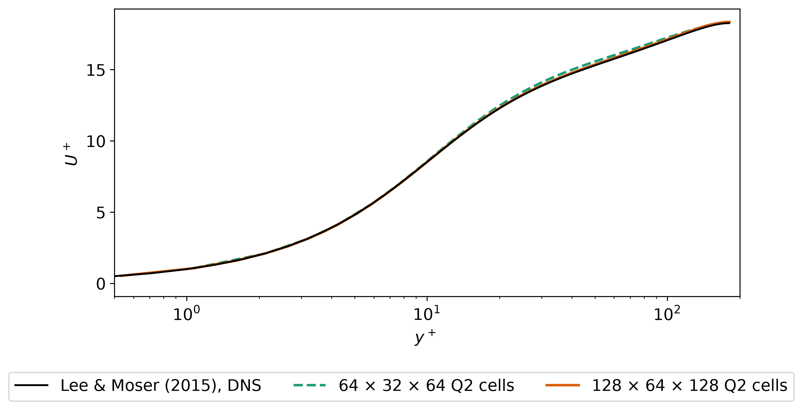
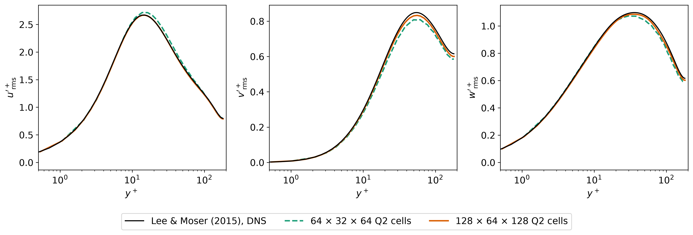
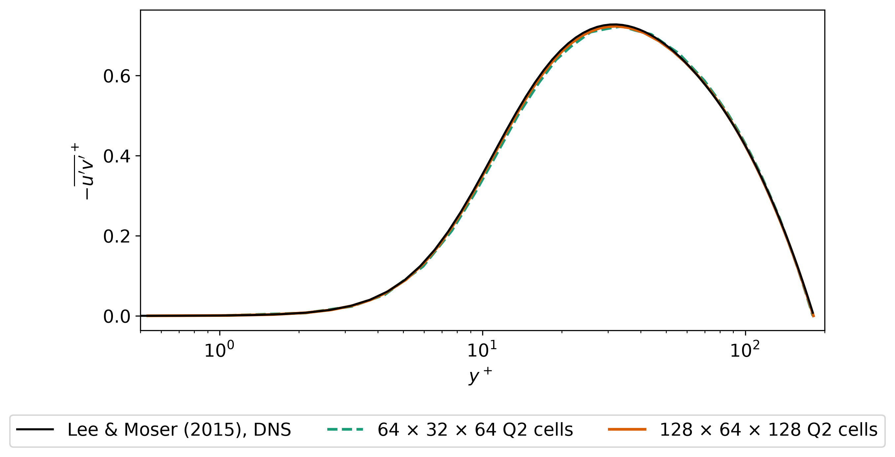

Turbulent Channel Flow at Re_τ = 180#
The turbulent flow between two parallel walls is the canonical benchmark of wall-bounded turbulence. Direct numerical simulations (DNS) at a friction Reynolds number \(\mathrm{Re}_\tau \approx 180\) [1] [2] [3] provide reference statistics (mean velocity, Reynolds stresses) for scale-resolving simulations. This example simulates this flow with the matrix-free solver of Lethe and Q2-Q2 elements, and shows that the statistics converge towards those of the DNS as the mesh is refined.
Features#
Solver:
lethe-fluid-matrix-free(with Q2-Q2)Transient problem with an adaptive time step (CFL = 1)
PSPG/SUPG stabilization
Periodic boundary conditions and flow control at a constant bulk velocity
Time-averaged velocity and Reynolds stresses
Mesh stretched towards the walls, generated with a Python script
Post-processing with a Python script: comparison with the DNS of Lee and Moser [3]
Files Used in This Example#
All files mentioned below are located in the example’s folder (examples/incompressible-flow/3d-turbulent-channel-Re-180).
Mesh generation script:
channel_mesh.pyParameter file:
channel.prmPost-processing script:
channel_postprocessing.pyReference data of the DNS of Lee and Moser [3]:
reference/LM_Channel_0180_mean_prof.datandreference/LM_Channel_0180_vel_fluc_prof.dat
Description of the Case#
The fluid flows in the \(x\) direction between two walls at \(y = -\delta\) and \(y = \delta\). The domain is periodic in the streamwise (\(x\)) and spanwise (\(z\)) directions, with lengths \(L_x = 4\pi\delta\) and \(L_z = 2\pi\delta\):


With the channel half-height \(\delta = 1\), the bulk velocity \(U_b = 1\) and the kinematic viscosity \(\nu = 3.5 \times 10^{-4}\), the bulk Reynolds number is
which is the one of the DNS of Lee and Moser [3]. The flow then reaches a friction Reynolds number
where \(\tau_w\) is the mean wall shear stress and \(u_\tau\) the friction velocity. Near the wall, the statistics are expressed in wall units: \(y^+ = y u_\tau / \nu\) (with \(y\) the distance to the wall), \(U^+ = U / u_\tau\) and \(\overline{u'_i u'_j}^+ = \overline{u'_i u'_j} / u_\tau^2\). In these units, one wall unit is \(\delta / 182\) here.
The domain must hold the largest turbulent structures: the near-wall streaks are about 100 wall units apart and up to about 1000 wall units long, and the motions of the outer region are longer still. The \(4\pi\delta \times 2\delta \times 2\pi\delta\) box used here (\(2288 \times 1144\) wall units in \(x\) and \(z\)) is that of Kim, Moin and Moser [1]. The often-used \(2\pi\delta \times 2\delta \times \pi\delta\) box (\(1144 \times 572\) wall units) truncates the longest and widest motions, while Lee and Moser [3] use an even larger \(8\pi\delta \times 2\delta \times 3\pi\delta\) box.
Since the domain is periodic, there is no inlet to drive the flow. A uniform body force \(\beta\) in the \(x\) direction plays the role of the mean pressure gradient: the flow control of Lethe adjusts it at each time step to keep the bulk velocity at \(U_b = 1\). Once the flow is statistically steady, the force balance over the domain gives \(\beta \delta = \tau_w / \rho = u_\tau^2\), so the time average of \(\beta\) gives the friction velocity of the simulation.
The simulation starts from a flat mean profile with a bulk velocity of 1, perturbed by divergence-free waves, and becomes turbulent within a few tens of time units \(\delta/U_b\). Once the flow is statistically steady, the velocity and the Reynolds stresses are averaged in time from \(t = 100\, \delta/U_b\) to the end of the simulation (\(t = 301\, \delta/U_b\)). These time averages are then averaged over the \(x\)-\(z\) planes and over the two halves of the channel.
Parameter File#
Simulation Control#
subsection simulation control
set method = bdf2
set adapt time step to respect CFL = true
set max cfl = 1
set end control = time
set time step = 0.01
set time end = 301
set output name = channel
set output path = ./output/
set output control = time
set output time frequency = 50
# Write each Q2 cell as 2x2x2 sub-cells, so the output holds every node.
set subdivision = 2
end
The second-order backward differentiation formula (bdf2) is used with a time step adapted to keep the CFL number at 1; the time step value is only used for the first iteration. On the mesh of this example, the time step settles at \(\Delta t \approx 0.042\, \delta/U_b\), or \(\Delta t^+ = \Delta t\, u_\tau^2/\nu \approx 0.5\). The results are written every 50 time units in the output folder. With subdivision = 2, each Q2 cell is written as \(2 \times 2 \times 2\) sub-cells whose vertices are the nodes of the cell, so the post-processing script has the value at every node.
FEM#
subsection FEM
set velocity degree = 2
set pressure degree = 2
end
Second-order (Q2) elements are used for both velocity and pressure.
Mesh#
subsection mesh
set type = dealii
set grid type = subdivided_hyper_rectangle
set grid arguments = 0.39269908169872414,...;0.023497296183941141,...;0.19634954084936207,... : 0, -1, 0 : 12.566370614359172, 1, 6.2831853071795862 : true
set initial refinement = 1
end
The mesh is a deal.II subdivided_hyper_rectangle with given step sizes in each direction (the lists are shortened above). The cells are uniform in \(x\) and \(z\), and stretched towards the walls in \(y\) with a hyperbolic tangent law:
with \(\gamma = 2\). The colorize = true argument (the last one) gives the boundary ids 0 and 1 to the faces at \(x = 0\) and \(x = L_x\), 2 and 3 to the walls, and 4 and 5 to the faces at \(z = 0\) and \(z = L_z\).
The grid arguments are generated by the script channel_mesh.py. It writes them into the parameter file and prints the resolution of the mesh in the wall units of the DNS for each refinement:
Q2 nodes in the wall units of Re_tau = 182.088 (node spacing = cell size / 2):
refinement cells DoFs (u, p) first node y+ center cell y+ dx+ dz+
0 32x16x32 540,672 2.14 46.3 35.8 17.9
1 64x32x64 4,259,840 1.07 23.1 17.9 8.9
2 128x64x128 33,816,576 0.53 11.6 8.9 4.5
The coarse mesh has \(32 \times 16 \times 32\) cells, and initial refinement = 1 gives the \(64 \times 32 \times 64\) mesh of this example (131,072 cells, about 4.3 million degrees of freedom): its first node off the wall is at \(y^+ \approx 1.1\) and its node spacings are \(\Delta x^+ \approx 18\) and \(\Delta z^+ \approx 9\). With initial refinement = 2, every cell is halved again: the \(128 \times 64 \times 128\) mesh (about 34 million degrees of freedom) has node spacings \(\Delta x^+ \approx 9\) and \(\Delta z^+ \approx 4.5\), similar to the grid spacings of the spectral DNS of Kim, Moin and Moser [1] (\(\Delta x^+ \approx 12\), \(\Delta z^+ \approx 7\)). The results below compare the two meshes. The options --cells, --gamma, --lx and --lz of the script change the coarse mesh.
Initial Conditions#
subsection initial conditions
set type = nodal
subsection uvwp
set Function constants = A1=0.05, a1=0.5, b1=4, A3=0.1, a3=2, b3=1
set Function expression = 9/8*(1-y^8) - A3*4*y*(1-y*y)*sin(a3*x)*cos(b3*z); A1*b1*(1-y*y)^2*cos(b1*z)*cos(a1*x) - A3*a3*(1-y*y)^2*cos(a3*x)*cos(b3*z); A1*4*y*(1-y*y)*sin(b1*z)*cos(a1*x); 0
end
end
The mean profile \(\frac{9}{8}\left(1 - y^8\right)\) is flat in the core, like a turbulent profile, and has a bulk velocity of exactly 1. It is perturbed by \(\mathbf{u}' = \nabla \times \left(\psi_x, 0, \psi_z\right)\) with
The perturbation is divergence-free and vanishes at the walls. The wave numbers \(a_1 = 0.5\) and \(b_3 = 1\) make the perturbation periodic on the whole domain but not on a \(2\pi\delta \times \pi\delta\) sub-box, so that the flow does not remain locked to a repetition of a smaller box.
Physical Properties#
subsection physical properties
set number of fluids = 1
subsection fluid 0
set kinematic viscosity = 3.5e-4
end
end
The kinematic viscosity sets \(\mathrm{Re}_b = 1/\nu = 2857\).
Boundary Conditions#
subsection boundary conditions
set number = 4
set fix pressure constant = true
subsection bc 0
set type = periodic
set id = 0
set periodic id = 1
set periodic direction = 0
end
subsection bc 1
set type = noslip
set id = 2
end
subsection bc 2
set type = noslip
set id = 3
end
subsection bc 3
set type = periodic
set id = 4
set periodic id = 5
set periodic direction = 2
end
end
The faces normal to \(x\) and to \(z\) are periodic and the walls are no-slip. Since no boundary sets the pressure, fix pressure constant = true removes its constant mode.
Flow Control#
subsection flow control
set enable = true
set inlet boundary id = 0
set average velocity = 1
set flow direction = 0
set initial beta = 4.06e-3
set verbosity = verbose
end
The flow control keeps the average velocity through the periodic face of id 0 at 1 in the \(x\) direction. The initial beta is \(u_\tau^2/\delta\) of the DNS, so that the flow control starts close to its final value. With verbosity = verbose, the bulk velocity and \(\beta\) are printed at every time step; the post-processing script reads \(\beta\) from this output to compute \(u_\tau\).
Post-processing#
subsection post-processing
set verbosity = verbose
set calculate kinetic energy = true
set calculate enstrophy = true
set calculate average velocities = true
set initial time for average velocity = 100
end
The time averages of the velocity and of the Reynolds stresses start at \(t = 100\), well after the transition (the enstrophy settles after \(t \approx 50\)). They are written in the .vtu files with the instantaneous fields. The kinetic energy and the enstrophy of the domain are written at every time step in output/kinetic_energy.dat and output/enstrophy.dat. The forces subsection of the parameter file writes the force on each boundary in output/force.<id>.dat; those on the walls (ids 2 and 3) give the wall shear stress.
Non-linear Solver#
subsection non-linear solver
subsection fluid dynamics
set tolerance = 1e-5
set reuse preconditioner = true
set verbosity = verbose
end
end
With a tolerance of \(10^{-5}\), the Newton solver does two iterations per time step and ends with a residual of about \(6 \times 10^{-7}\). With reuse preconditioner = true, the multigrid preconditioner built at the first iteration is reused at the second, which saves one setup per time step. Only the preconditioner is reused: the residual and the Jacobian are evaluated at the current iterate, so the converged solution is unchanged.
Linear Solver#
subsection linear solver
subsection fluid dynamics
set verbosity = verbose
set method = gmres
set max iters = 200
set max krylov vectors = 200
set relative residual = 1e-4
set minimum residual = 1e-7
set preconditioner = gcmg
# Multigrid parameters. hp: the coarsest level is Q1 on the coarse mesh.
set mg verbosity = quiet
set mg enable hessians in jacobian = false
set mg coarsening type = hp
# Smoother
set mg smoother iterations = 5
set mg smoother eig estimation = true
# Eigenvalue estimation parameters
set eig estimation smoothing range = 5
set eig estimation cg n iterations = 20
set eig estimation verbosity = quiet
# Coarse-grid solver: one AMG cycle (a direct solve is far too slow).
set mg coarse grid solver = amg
end
end
The linear systems are solved with GMRES preconditioned by a global coarsening multigrid (gcmg). With mg coarsening type = hp, the levels first coarsen the mesh down to the coarse mesh, then lower the polynomial degree from 2 to 1. The coarsest level (Q1 on the \(32 \times 16 \times 32\) mesh) is solved with one AMG cycle. GMRES takes about 20 iterations per solve. The other parameters are explained in Linear Solver.
Restart#
subsection restart
set checkpoint = true
set frequency = 2000
set filename = restart
set restart = false
end
A checkpoint is written every 2000 time steps. If the simulation stops before its end (e.g., at the time limit of a job on a cluster), it resumes from the last checkpoint with restart = true. The time averages are saved in the checkpoint and resume with it.
Running the Simulation#
The simulation is launched in parallel with the lethe-fluid-matrix-free executable. Its standard output must be saved in log.txt, since the post-processing script reads the flow-control force \(\beta\) from it:
Warning
This simulation must be run on a cluster. On the \(64 \times 32 \times 64\) mesh of the parameter file, it took 3.7 hours on 192 cores (one node of two Intel Xeon 6972P), for about 7,200 time steps. On the \(128 \times 64 \times 128\) mesh (initial refinement = 2), it took 28.5 hours on 384 cores (two nodes of two AMD EPYC 9654), for about 14,600 time steps. The simulation requires more computing power due to the number of time steps required. The case requires at most 20GB of RAM to run and can also be run on a lower core count (e.g. 16), but at the cost of more hours of compute time.
Once the simulation is over, the post-processing script compares the statistics with the DNS of Lee and Moser [3]. It needs numpy and matplotlib. In the folder of the simulation:
The script first extracts the profiles of each snapshot that holds statistics (written at \(t \ge 101\)): it averages the time-averaged fields of the .vtu files over the \(x\)-\(z\) planes, folds them onto one half of the channel, and writes them in output/profiles_<time>.tsv. python3 channel_postprocessing.py extract only does this extraction: it can be run on the cluster, so that only these small files need to be copied, rather than the .vtu files (2.6 GB on the mesh of this example, 21 GB on the finer one). The script then reads \(\beta\) from log.txt, averages it over the averaging window of the last snapshot to obtain \(u_\tau = \sqrt{\overline{\beta} \delta}\), and plots the last profiles in wall units against those of the DNS. Several simulations are compared by giving their folders:
The script also prints \(\mathrm{Re}_\tau\) and the errors on the skin friction coefficient \(C_f = 2 \tau_w / (\rho U_b^2)\) and on the profiles.
Results and Discussion#
The results of the \(64 \times 32 \times 64\) mesh of the parameter file are compared with those of the \(128 \times 64 \times 128\) mesh obtained with initial refinement = 2. The two simulations were averaged over the same window, \(t = 100\) to \(300\), or 200 time units \(\delta / U_b\).
The mean velocity agrees with the DNS on both meshes, in the viscous sublayer (\(U^+ = y^+\)), the buffer layer and the logarithmic region:

The root-mean-square velocity fluctuations are more sensitive to the resolution. On the \(64 \times 32 \times 64\) mesh, the peak of \(u'_\mathrm{rms}\) is slightly too high, and those of \(v'_\mathrm{rms}\) and \(w'_\mathrm{rms}\) are too low: the under-resolved simulation puts too much of the turbulent kinetic energy in the streamwise component. Refinement moves the three components towards the DNS:

The Reynolds shear stress \(-\overline{u'v'}^+\) agrees with the DNS on both meshes. In a statistically steady channel, the mean momentum balance fixes the total shear stress, \(-\overline{u'v'}^+ + \mathrm{d}U^+/\mathrm{d}y^+ = 1 - y/\delta\), so this profile depends mostly on \(\mathrm{Re}_\tau\):

The script prints the friction Reynolds number and the errors against the DNS. \(C_f\) is computed from \(u_\tau\), and the error on \(U^+\) is the relative \(L^2\) error over the half-channel:
Mesh |
\(\mathrm{Re}_\tau\) |
\(C_f\) |
\(U_c^+\) |
\(U^+\) (\(L^2\)) |
\(u'^+_\mathrm{rms}\) peak |
\(v'^+_\mathrm{rms}\) peak |
\(w'^+_\mathrm{rms}\) peak |
\(-\overline{u'v'}^+\) peak |
|---|---|---|---|---|---|---|---|---|
\(64 \times 32 \times 64\) |
180.7 |
−1.5 % |
+0.2 % |
1.1 % |
+1.6 % |
−4.8 % |
−2.3 % |
−0.6 % |
\(128 \times 64 \times 128\) |
181.5 |
−0.7 % |
+0.5 % |
0.4 % |
−0.2 % |
−1.9 % |
−1.1 % |
−0.6 % |
DNS [3] |
182.1 |
Even on the \(64 \times 32 \times 64\) mesh (\(\Delta x^+ \approx 18\), \(\Delta z^+ \approx 9\)), the skin friction is within 1.5 % of the DNS and the mean velocity within about 1 %. Refining the mesh halves the error on the skin friction, divides the error on the mean velocity by almost three, and brings the peaks of the three rms velocities within 2 % of the DNS. The largest remaining error is on the peak of \(v'_\mathrm{rms}\), the wall-normal component. The averages over 200 time units still carry a statistical uncertainty: the profiles change by up to 0.6 % between consecutive snapshots, 50 time units apart, and the mean velocities of the two halves of the channel differ by up to 0.5 % of the centerline velocity. Differences below about 0.5 % between the two meshes, such as on \(U_c^+\) and on the peak of the Reynolds shear stress, are within this uncertainty.
Possibilities for Extension#
Box size: run the case in the smaller \(2\pi\delta \times 2\delta \times \pi\delta\) box (
python3 channel_mesh.py --cells 16 16 16 --lx 6.283185307179586 --lz 3.141592653589793 --prm channel.prm, with the same cell sizes) and observe the effect of the truncation of the large-scale motions on the statistics.Polynomial degree: compare Q1-Q1 and Q2-Q2 elements with the same number of nodes (Q1 elements on the mesh refined once more), or try Q3-Q3 elements.
Higher Reynolds numbers: Lee and Moser [3] also give the statistics at \(\mathrm{Re}_\tau \approx 550\), 1000, 2000 and 5200. The number of cells grows roughly as \(\mathrm{Re}_\tau^3\) at a fixed resolution in wall units.
Longer averaging: average the statistics over a longer window to reduce their statistical uncertainty.